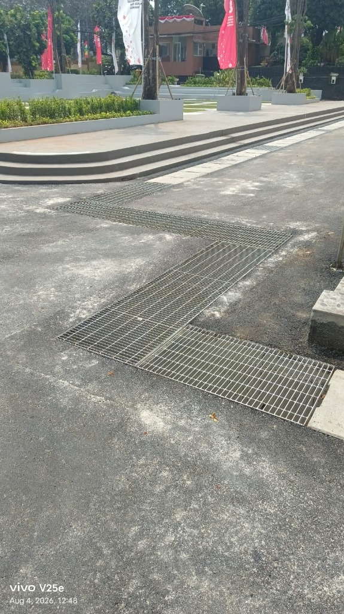

Drainase & Precast Mulai Rp 290rb/m¹Pemasangan U-Ditch & Saluran Drainase
Pemasangan saluran drainase beton precast U-Ditch, Cover U-Ditch (Heavy/Light Duty), Box Culvert, Buis Beton, dan Steel Grating untuk mencegah genangan air serta banjir.
- Material Mutu Beton K-350 s/d K-500 SNI
- Sistem sambungan interlocking presisi & anti-rembes
- Pekerjaan cepat menggunakan alat berat excavator & crane
- Tersedia penutup cover beton & grill besi heavy duty